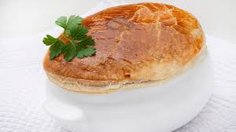

Ingredientes
- 80 g de trufa negra (Tuber melanosporum)
- 1 litro de caldo concentrado de ave
- 100 g de martignon
- 120 g de foie mi-cuit
- 10 g de pechuga de pollo
- 1 lámina de hojaldre
- 1 huevo
- 25 g de portobello (o champiñón)
- 25 g de cebolleta
- 25 g de apio
- 25 g de zanahoria
- 1 nuez de mantequilla
- Sal
- 5 alitas de pollo
- 1 carcasa de pollo
- 1 muslo de pollo
- 1/4 de gallina
- 2 zanahorias
- 1/2 puerro
- 2 cebollas
- 4 litros de agua
- Aceite de oliva virgen extra
- Sal
Para el martignon:
Para el caldo concentrado de ave:
PREPARACIÓN
- Paso 1: Preparación de las patatas
Cortar las patatas en rodajas finas y trocearlas con el cuchillo hasta que parezcan escamas de pescado. - Paso 2: Fritura de las patatas
Freír las patatas en aceite abundante hasta que estén crujientes. - Paso 3: Preparación de los salmonetes
Sacar los lomos de los salmonetes y cortarlos por la mitad. Salpimentarlos y freírlos en la sartén por el lado de la piel hasta que estén cocidos. - Paso 4: Cocinar los lomos
Girar los lomos y cocerlos 10 segundos más por la parte de la carne. - Paso 5: Guardar el aceite
Guardar el aceite que queda en la sartén. - Paso 6: Preparación de la salsa
Mezclar el ketchup, la mayonesa y el aceite sobrante de la fritura del pescado. Rectificar la sal y añadir unas gotitas de salsa en el plato.